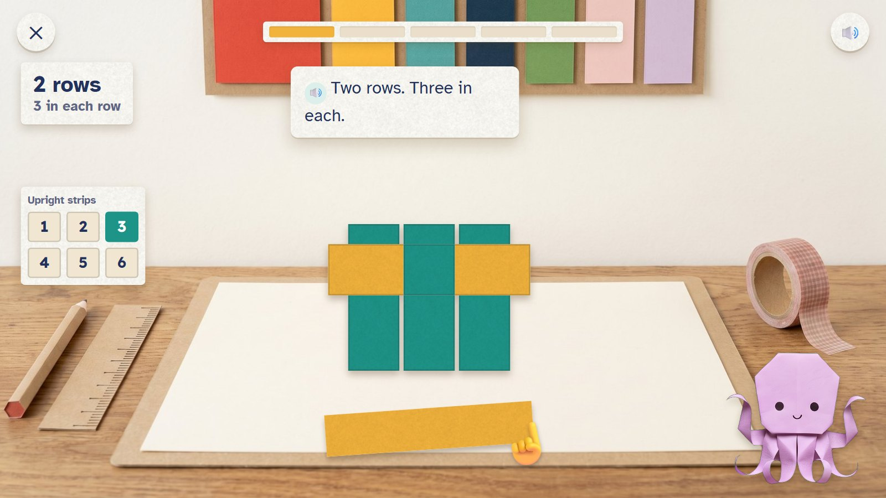
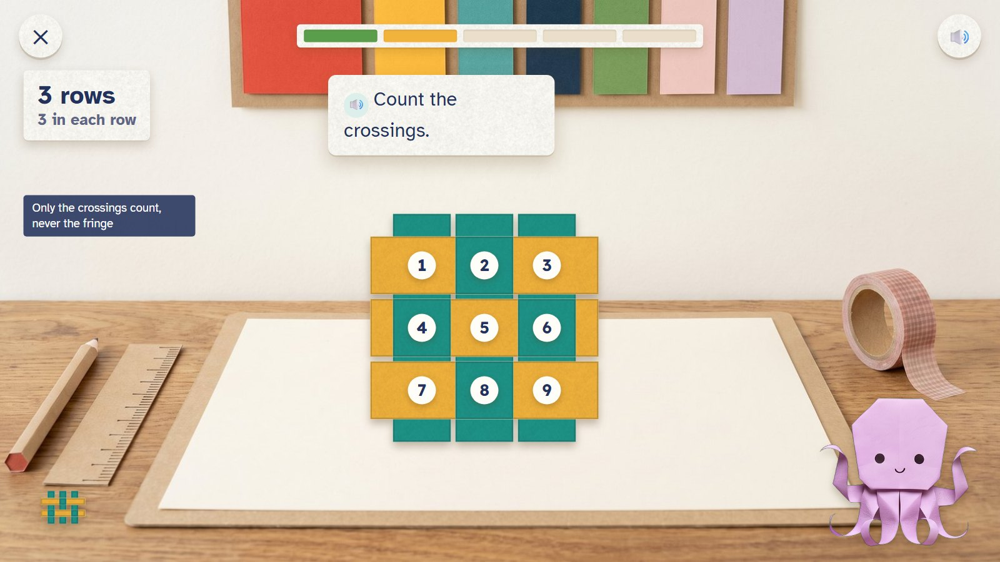
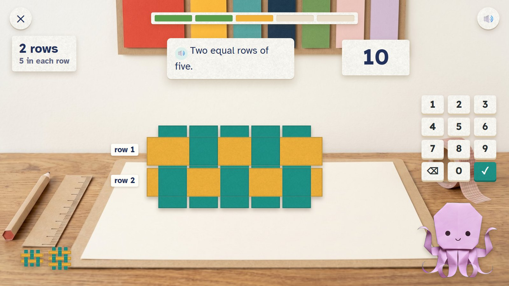
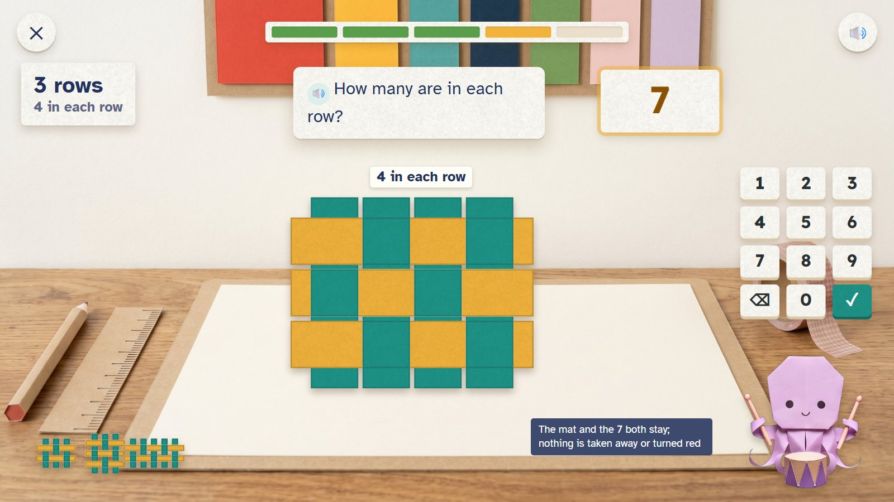
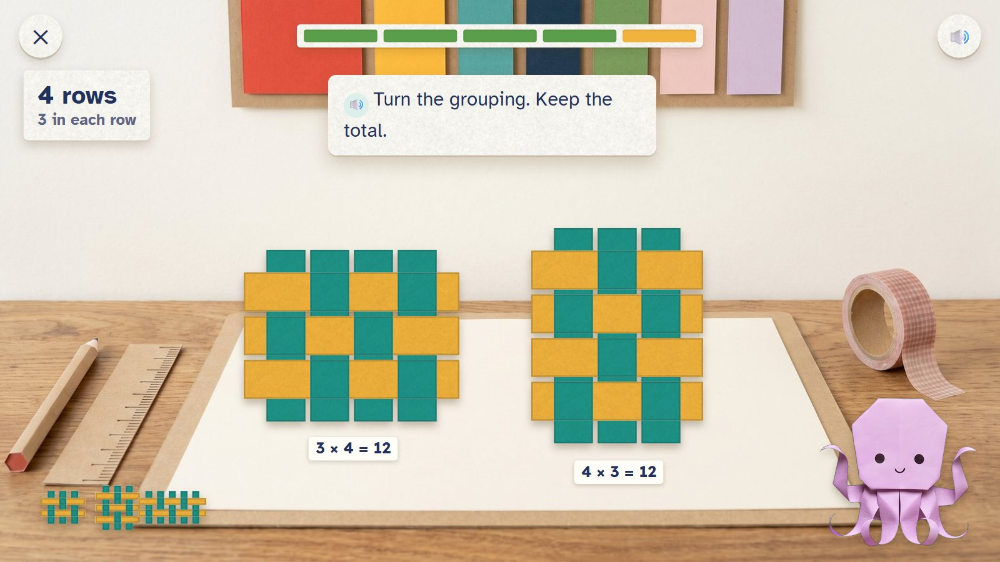
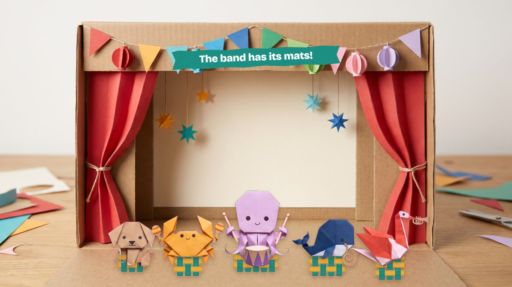

Ovu's band needs mats for its stage. The child picks how many upright strips, then weaves strips across. Every crossing is one square, so a mat of 3 rows with 4 in each row has 12 squares: equal rows become multiplication. The fringe never counts.
Grades 1–2 · ages 6–8 E13 Array builder paper move: weave
Skill: Equal rows and their total; multiplication once it is taught. Host: Ovu the octopus. One activity is 5 rounds, about two minutes.
Each strip woven in makes a whole row at once, and the band plays on the finished mats.
Fixed. The whole mat and its rows stay in view.
The five mats slide under the band's instruments and the band plays (2.5 seconds).

The child chose 3 upright strips; one row is woven, the second is being pulled in.
🔊 Two rows. Three in each.

The first mat (6) waits at the side. The 3 × 3 mat is counted, crossing by crossing.
🔊 Count the crossings.
Only the crossings count, never the fringe.

Two rows of five; the child types 10.
🔊 Two equal rows of five.

Three rows of four. The child added 3 and 4 and typed 7. The mat and the 7 stay.
🔊 How many are in each row?
A tip about the rows, never the answer.

Fixed: 12. The next mat is 4 rows of 3: also 12. Side by side.
🔊 Turn the grouping. Keep the total.
The × sign appears only for children who have learned it.

Five mats under the band's instruments.
🔊 The band has its mats!
Mock-ups: Gemini's paper pictures (scenes, friends, props) with the maths pieces drawn by code, as the app would draw them. In the app everything moves; here it stands still.
| Round | Task |
|---|---|
| 1 | 2 rows of 3: 6 |
| 2 | 3 rows of 3: 9 |
| 3 | 2 rows of 5: 10 |
| 4 | 3 rows of 4: 12 |
| 5 | 4 rows of 3: 12 |
This is one activity card. The skill's five steps (see it, fill one part, on your own, check it, word problem) are five different cards made from the same engine. Stars count first tries only: 5 of 5 = 3 stars, 4 = 2, 3 = 1.
| Mistake | Looks like | What happens (never red, never "wrong") |
|---|---|---|
| Adding the sides | 3 rows of 4 gives 7 | "How many are in each row?" |
| Counting the fringe | counts the loose ends too | "Only the crossings count." |
| Skipping a row | counts 2 rows of 4 | row labels appear: row 1, row 2, row 3 |
| Rows and columns swapped | 4 rows of 3 instead of 3 of 4 | accepted if the total is asked; the order tip if the shape is asked |
Test robot: Reads rows and columns from the order, weaves them, and types rows × columns. Once it types rows + columns, to check the tip.
← Back to the second plan · ← Tear-off Tickets · Folded Lantern Tower →